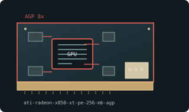

[ AGP-ERA GRAPHICS CARDS // IDENTIFIED COMPONENT ]
ATI Radeon X850 XT Platinum Edition 256 MB AGP
R480 / X850 XT Platinum Edition, 2005. This entry identifies one model or reference configuration; related products and OEM variants are distinguished below.

MODEL / VARIANT: X850 XT PE is a high-clocked AGP R480 SKU, distinct from X850 XT, X800 XT PE and PCIe X850 boards. Identify exact PCB and plug type.
Recorded specifications
| Cataloged product | ATI Radeon X850 XT Platinum Edition 256 MB AGP |
|---|---|
| Generation / core | R480 / X850 XT Platinum Edition, 2005 |
| Core & memory | R480; 16 pixel pipelines and 6 vertex engines; 256 MB GDDR3 on 256-bit bus; reference 540 MHz core and 590 MHz memory (1.18 GHz effective). |
| Host interface & I/O | AGP 8x; DVI-I, VGA, and video-out board outputs; auxiliary power input and cooler depend on board design. |
| Variant boundary | X850 XT PE is a high-clocked AGP R480 SKU, distinct from X850 XT, X800 XT PE and PCIe X850 boards. Identify exact PCB and plug type. |
| Archival identification | Record full part number, PCB or module revision, BIOS/firmware, device/subsystem IDs, driver version, adapters, physical condition and source-document edition. |
Compatibility, service & archival notes
Reference specifications are for AGP X850 XT PE; PCI Express version and partner cards differ in interface and board layout.
Check auxiliary power, cooler fan and AGP slot compatibility; save VBIOS and driver. Inspect card length and memory cooling before installation.
- Check signaling, slot keying, lane width, power pinout, board/module dimensions, case clearance, airflow and PSU requirements for the exact specimen.
- Use drivers supporting its device ID and target OS. Preserve original installer and firmware copies, and record their versions before changes.
- Do not energize boards with corrosion, cracks, damaged connectors, obstructed cooling or suspected shorts; document condition before bench testing.
Manufacturer, model & standards sources
- Radeon X800 family model contextModel/product-history reference; compare the exact card revision and nameplate.
- AMD/ATI legacy product and driver archiveManufacturer or archived product/driver documentation; exact OEM board details may differ.
- AGP interface standardHost interface reference; confirm exact physical and electrical compatibility.
Reference specifications do not supersede the board vendor's manual or nameplate. Performance figures are vendor claims unless explicitly identified as measured.